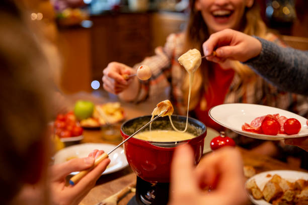
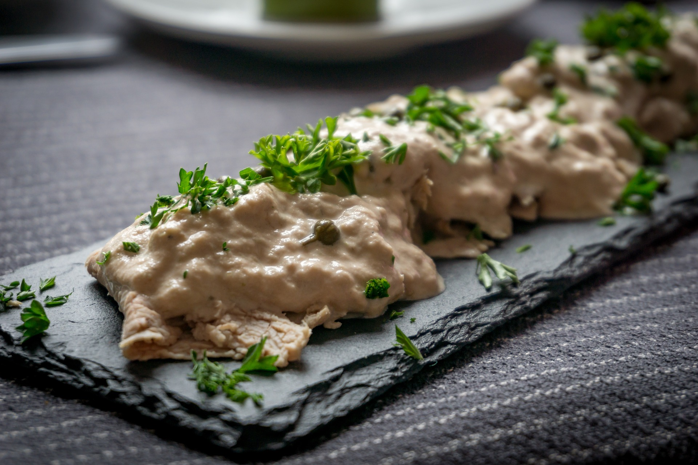

Ricette Salate
In questa sezione troverai tutte le ricette salate tipiche delle regioni italiane, dai piatti di pasta alle pizze, ideali per pranzi e cene gustose.

Valle D'Aosta -La Fonduta-
Ingredienti:
-Fontina 400g
-Tuorli 4
-Pepe nero q.b.
-Latte intero 400g
-Burro 30g
Preparazione:
Per preparare la fonduta alla Valdostana, per prima cosa eliminate la crosta esterna della fontina, quindi affettatela sottilmente. Trasferite il formaggio in una pirofila e versate il latte sopra.
Coprite con della pellicola per alimenti e lasciate riposare in frigorifero per una notte. Trascorso il tempo di riposo, scolate il formaggio dal latte attraverso un colino e tenete da parte il latte.
In una bastardella, appoggiata sopra a un tegame per la cottura a bagnomaria, ponete il formaggio scolato. Sciogliete il formaggio a fuoco medio mescolando con un cucchiaio di legno. All'inizio vedrete una massa, poi piano piano si scioglierà e diventerà più fluida. A questo punto versate i tuorli uno alla volta, mescolando di continuo. Incorporate anche il burro freddo e proseguite a mescolare.
Pepate e mescolate ancora. A questo punto versate circa 100 g del latte tenuto da parte; regolate la dose in base alla consistenza della fonduta che non deve essere né troppo liquida né troppo compatta. In totale la cottura richiederà circa 30 minuti.
Una volta pronta, versate la fonduta nel tipico tegame per fondute e bourguignonne, con un fornellino sul fondo che terrà in caldo la fonduta e ne preserverà la consistenza fluida. Guarnite con pepe a piacere e servite subito la vostra fonduta alla Valdostana!

Piemonte -Il Vitello tonnato-
Ingredienti:
-Vitello (magatello o girello) 800 g
-Sedano 1 costa
-Carote 1
-Cipolle dorate 1
-Aglio 1 spicchio
-Vino bianco 250 g
-Acqua 1,5 l
-Alloro 1 foglia
-Chiodi di garofano q.b.
-Olio extravergine d'oliva 3 cucchiai
-Pepe nero in grani q.b. Sale fino q.b.
Per la salsa:
-Uova 2
-Tonno sott'olio sgocciolato 100 g
-Acciughe sott'olio 3 filetti
-Capperi sotto sale 5 g
-Frutti di cappero per decorare q.b.
-Brodo di carne 150 g
Preparazione:
Per preparare il vitello tonnato, iniziate dalla pulizia delle verdure che serviranno per cuocere la carne. Lavatele, quindi pelate la carota e spuntatela, tagliatela in pezzi. Poi eliminate le estremità dal sedano e tagliate anch'esso in pezzi . Sbucciate la cipolla e dividetela in 2 parti, mondate l'aglio che servirà intero. Passate alla pulizia della carne eliminando eventuali cartilagini e filamenti di grasso. In una pentola capiente mettete il pezzo di girello.
Unite le verdure tagliate e l'agio, la foglia di alloro, i chiodi di garofano e i grani di pepe nero. Versate il vino bianco e poi l'acqua che dovrà coprire il tutto. Salate e poi unite anche l’olio. Accendete il fornello e attendete che raggiunga il bollore.
Man a mano eliminate la schiuma che affiorerà in superficie. Poi chiudete col coperchio e abbassate leggermente la fiamma lasciando cuocere circa 40-45 minuti: ricordando che per ogni 500 g di carne occorrono circa 30 minuti di cottura. L’importante è che al cuore la carne non superi i 65°, da misurare con un termometro da cucina. Una volta cotto il pezzo di carne, scolatelo e lasciatelo raffreddare completamente.
Poi filtrate il brodo. Servirà circa 150 g di brodo. Intanto passate a preparare le uova sode. In un pentolino con abbondante acqua fredda immergete le uova fresche. Accendete il fornello e dal momento del bollore contate 9 minuti . Quando saranno rassodate scolatele e sciacquatele sotto acqua fredda. Una volta raffreddate, sgusciatele e tagliatele in 4 parti.
In una brocca versate gli spicchi d’uovo, il tonno sgocciolato, le acciughe sott’olio e i capperi dissalati (potete dissalarli sciacquandoli sotto acqua fresca corrente). Infine aggiungete il brodo poco alla volta. Utilizzate il frullatore ad immersione (eventualmente va bene anche il classico mixer) e aggiungete altro brodo al bisogno . Frullate fino ad ottenere una crema liscia.
A questo punto la carne dovrebbe essere completamente fredda. Affettatela sottilmente con un coltello a lama liscia. Disponete le fettine in un piatto da portata e versate nel mezzo la crema ottenuta. Decorate infine con i frutti di cappero, qualcuno intero e qualcuno tagliato a metà ed ecco pronto il vostro vitello tonnato.